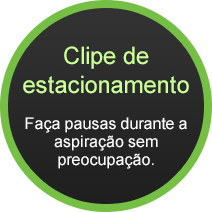
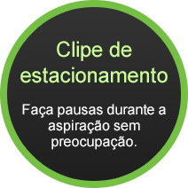

Bocal AeroPro™
Silent
Desenvolvido para diminuir os
ruídos do aspirador, seu design
aerodinâmico limpa todos os
tipos de superfícies com uma
performance superior.
Máximo poder
de sucção
com 1200W de
potência
Alto desempenho com economia de energia.
Sistema AeroPro™
Vedação completa dos bocais
até a parte interna do
aspirador, evita a perda de ar,
aumenta a performance de
sucção e reduz o ruído.
 

Bocal 3 em 1: (escova / cantos e frestas e estofados)
Todas as funções em apenas
um bocal. Excelente
desempenho para estofados,
móveis, cantos, frestas e
qualquer tipo de superfície.
Filtro Hepa lavável
na saída de ar
Retém 99% das impurezas do ar
aspirado. Mantém sua casa mais
limpa e segura.
frestas Escova para
superfícies
frias Estofados
e tecidos
Praticidade: 8,4 de alcance
Aspira mais áreas com
menos trocas de tomada!
Indicador para troca
de saco descartável
Dispositivo muda de cor e avisa
que está na hora de trocar o saco
descartável.
Alça ergonômica com regulador de
sucção acoplado no
punho da mangueira
Economiza seu tempo e
facilita a limpeza.


Pedal liga/desliga
Agilidade para ligar e desligar
quando e onde precisar.
Enrolador de cabo
elétrico
Muito mais praticidade na hora
de guardar seu aspirador.
Aspirador com saco
descartável SBag®:
capacidade para 4L:
- Mantém a garantia do aspirador.
- Possui alto nível de filtragem e mantém o fluxo de ar: tecnologia que conserva a performance de sucção do aspirador.
- Resistente e durável, material sintético de alto desempenho. Dura 50% mais do que os sacos comuns.
- Alta capacidade de armazenamento, diminui a frequência de troca.
- Sistema de fechamento higiênico: basta puxar a alça que ele já sai fechado do aspirador, sem contato com o pó. Pronto para jogar no lixo!
Embalagem
- 1 Aspirador de Pó Ultra Silencer Green
USG30 - 1 bocal Aeropro
- 1 bocal 3 em 1
- 1 tubo prolongador metálico
- Manual de instruções
- Garantia do produto
Especificações técnicas
- Altura: 266mm
- Largura: 308mm
- Profundidade: 402mm
- Peso líquido: 8,35kg